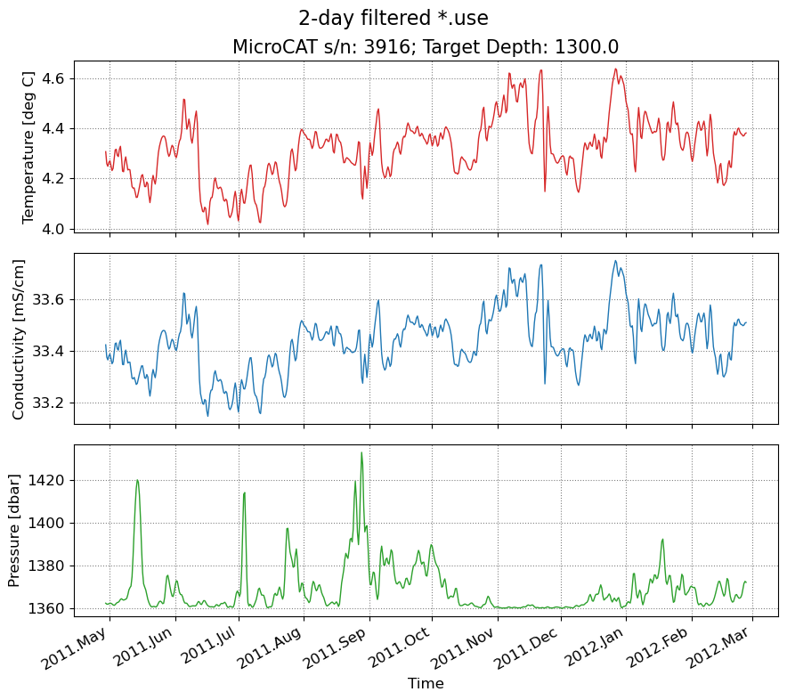

oceanarray demo - mooring-level processing
This notebook walks through the instrument-level processing.
[1]:
from pathlib import Path
import numpy as np
import xarray as xr
import numpy as np
from oceanarray import readers, rodb, mooring, plotters, tools
Mooring-level processing
Step 1: Grid in time
In this case, we’ll grid in time by first filtering the original data with a 2-day 6th order Butterworth lowpass filter, then grid to a 12 hour interval by linear interpolation.
[2]:
data_dir = Path(".." ,"data")
input_file_pre = 'wb2_9_201114*use'
input_files = list(data_dir.glob(input_file_pre))
ds_list = [rodb.rodbload(f) for f in input_files]
[3]:
# Extract one dataset for demonstration of filtering
ds1 = ds_list[0]
ds_filt = mooring.filter_all_time_vars(ds1)
ds_interp = mooring.interp_to_12hour_grid(ds_filt)
fig = plotters.plot_microcat(ds_interp)
fig.suptitle("2-day filtered *.use", fontsize=16, y=0.98)
ds_interp
[3]:
<xarray.Dataset> Size: 24kB
Dimensions: (TIME: 609)
Coordinates:
* TIME (TIME) datetime64[ns] 5kB 2011-04-29 ... 2012-02-27
N_MEASUREMENTS (TIME) int64 5kB 8 32 56 80 104 ... 14528 14552 14576 14600
Data variables:
T (TIME) float64 5kB 4.307 4.259 4.248 ... 4.37 4.379 4.382
C (TIME) float64 5kB 33.42 33.38 33.37 ... 33.5 33.51 33.51
P (TIME) float64 5kB 1.362e+03 1.362e+03 ... 1.372e+03
InstrDepth float64 8B 1.3e+03
Latitude float64 8B 26.52
Longitude float64 8B -76.74
Attributes:
mooring: wb2_9_201114
serial_number: 3916
water_depth: 3880
start_time: 2011/04/28T20:00
end_time: 2012/02/27T19:00
source_file: ../data/wb2_9_201114_3916.use
columns: ['YY', 'MM', 'DD', 'HH', 'T', 'C', 'P']

[4]:
# Apply filter to all datasets
ds_li = []
for ds in ds_list:
ds_filt = mooring.filter_all_time_vars(ds)
ds_interp = mooring.interp_to_12hour_grid(ds_filt)
ds_li.append(ds_interp)
Step 2: Grid vertically
[5]:
stacked_ds = mooring.stack_instruments(ds_li)
stacked_ds
[5]:
<xarray.Dataset> Size: 258kB
Dimensions: (N_LEVELS: 17, TIME: 609)
Coordinates:
* TIME (TIME) datetime64[ns] 5kB 2011-04-29 ... 2012-02-27
N_MEASUREMENTS (TIME) int64 5kB 8 32 56 80 104 ... 14528 14552 14576 14600
* N_LEVELS (N_LEVELS) int64 136B 0 1 2 3 4 5 6 ... 10 11 12 13 14 15 16
InstrDepth (N_LEVELS) float64 136B 50.0 100.0 ... 3.3e+03 3.85e+03
Data variables:
C (N_LEVELS, TIME) float64 83kB 52.61 52.75 ... 32.54 32.54
P (N_LEVELS, TIME) float64 83kB 65.99 63.23 ... 3.898e+03
T (N_LEVELS, TIME) float64 83kB 22.29 22.49 ... 2.303 2.303
Attributes:
mooring: wb2_9_201114
columns: ['YY', 'MM', 'DD', 'HH', 'T', 'C', 'P']
start_time: 2011/04/28T20:00
end_time: 2012/02/27T19:00
water_depth: 3880
Latitude: 26.515333333333334
Longitude: -76.74283333333334
serial_numbers: ['3220', '4619', '5242', '5765', '3903', '3904', '3910',...[6]:
# Interpolate using the rapid_interp